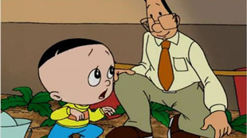

此去经年
填满童年记忆的东西有很多，但能把你拉回童年的又是什么呢？是分给你一块糖的小伙伴？是让你痴迷的某个动画片？还是陪伴你成长的某首歌谣？此去经年，不应该只是伤感，让我们一起通过影片回到我们真正的童年，再体验一把无忧无虑吧！
-
我的左脸
影片以上世纪90年代为背景，撷取了小欧成长中的几个片段，讲述了单亲父亲对小欧每一次“错误”的唯一教育方式就是打骂的故事。这些打骂对小欧来说都是成长的刺痛与印记。随着小欧的长大，才慢慢地理解了父亲特殊的爱...

那年光影
童年，吃过的零食，看过的动画片和电视剧，玩过的玩具和游戏机，读过的课本和课外书，你还记得他们都长什么样子吗?如果再相见是否会换来你的会心一笑，是否能让你回忆起童年的那些美好？那年光影，带你重新拾起儿时的记忆，拥抱那年的你。
-
《海尔兄弟》
是一部大型国产动画片，讲述一对由智慧老人所创造的海尔兄弟和他们的朋友为解决人类面临的灾难和解开无尽的自然之谜而环游世界。
-
《七龙珠》
来自遥远星系的比克大魔王来到地球为非作歹，令人民时刻困扰。一群优秀的武术家研究出魔封波，将比克大魔王封印，世界重归光明。
-
 《大头儿子和小头爸爸》
由诸多微小而有趣的故事组成，适合儿童观看的动画片。动画片主角大头儿子，小头爸爸和围裙妈妈组成的一个平凡的三口之家，他们是中国现代家庭教育典型的缩影。
-
《新白娘子传奇》
十年修得同船渡，百年修得共枕眠。本片以新奇的视角，独特的手法，美妙的情节，重温了这段千古流传的人间仙恋。前世善良机灵的小牧童，临危救难引发惊世骇俗的缘分。
-
《西游记》
故事讲述的是唐朝太宗贞观年间孙悟空、猪八戒、沙僧、白龙马四人保护唐僧西行取经，沿途历经磨难，一路降妖伏魔，化险为夷，最后到达西天，取得真经的故事。
-
《还珠格格》
改编自琼瑶同名小说的一部古装清朝喜剧陪伴着我们长大，暑假打开电视都是他们的笑脸带给我们无限欢乐，如今小燕子也有了小小燕子，金锁也找到了她的大黑牛，紫薇也从未停止追求幸福的脚步。
我记得的，你还记得吗？
8090后的我们有一些专属记忆，那时的科技还没有这么发达，于是，手边的任何东西都能被我们发挥创造成为玩物，一张废纸、一块泥巴我们都玩得不亦乐乎。这些东西在00后们看来或许有些out，甚至可称之为异物，但却在彼时给我们带来无限欢乐，留藏在我们记忆深处。回忆童年，怎能不提起它们，快来看看下面这些东西你还记得几个！嘘~一不小心就会暴露年龄哦！
童节送给孩子最好的礼物——父母的爱与陪伴
如今，很多父母由于工作的原因陪伴孩子的时间越来越少。儿童节到了，他们会给孩子买贵重的礼物，送昂贵的礼品。然而殊不知，对于孩子来说，再好的礼物都比不上父母的陪伴与关爱，父母的呵护是任何物品都无法替代和比拟的。你可知父母不在身边时，他们是如何度过？孤独、焦虑、沮丧……他们又如何期盼父母的归来？心急、渴望、等待……让我们一起来通过影片走进孩子的内心世界吧！
-
闷
主人公小男孩乐乐有一个幸福的家庭,但有一天父母出差了,家里只留下他和他最讨厌的管家。因为他觉得管家总把他的玩具收走,限制他的自由,尤其从不让他进家里面的一扇锁着的大门,而钥匙只有管家有。于是小男孩与管家斗智斗勇争夺钥匙…